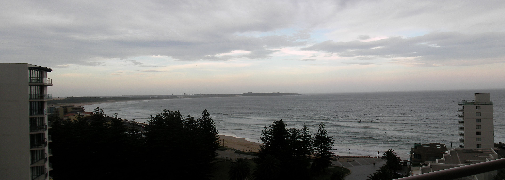
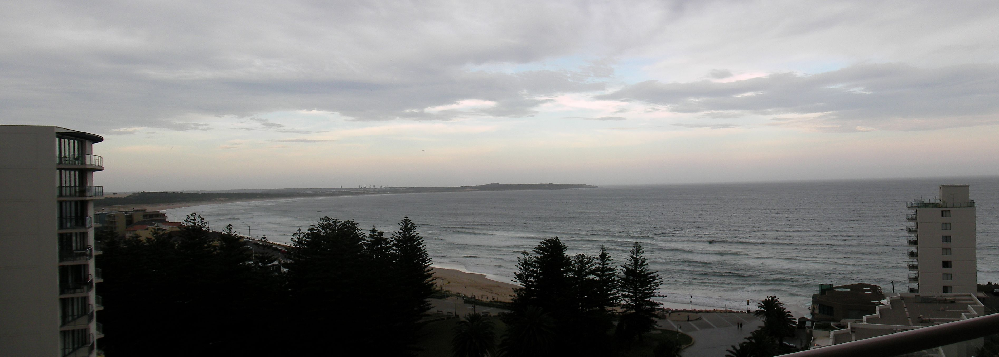

NIAC2008 attendees¶
Attendees of the 2008 NIAC Meeting at Rydges Cronulla Beach Hotel in Sydney, Australia.
Name |
Company/Institute |
|---|---|
[Peter Peterson (Chair)] (Peter_Peterson.html “wikilink”) |
|
[Freddie Akeroyd (Secretary)] (Freddie_Akeroyd.html “wikilink”) |
|
[Nick Hauser] (Nick_Hauser.html “wikilink”) |
|
[ Jens-Uwe Hoffmann] (Jens-Uwe_Hoffmann.html “wikilink”) |
|
[Mark Koennecke] (Mark_Koennecke.html “wikilink”) |
|
Peter Lewis |
|
[Jiro Suzuki] (Jiro_Suzuki.html “wikilink”) |
|
[Pete Jemian] (Pete_Jemian.html “wikilink”) |
|
Paul Lewis |
Los Alamos National Laboratory |
[Matthias Drochner] (Matthias_Drochner.html “wikilink”) |
Juelich |

 
